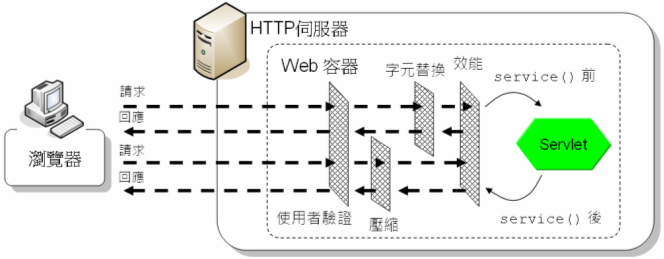
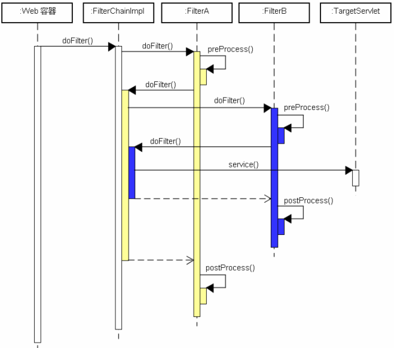

|
|
過濾器是個可重用的（Resuable）元件，可以轉換對資源的請求，也可以轉換回應的內容（過濾器並不負責建立回應內容）。 過濾器通常作為一個服務（Service）加入至應用程式之中，即時地為應用程式增加功能，但不用修改原有的應用程式，在不需要使用服務時，可以直接將過濾器從應用程式抽離，而不用修改原應用程式。過濾器可以實現的服務以下有幾個例子：
Servlet／JSP提供了過濾器機制讓你實作這些元件服務，而就如下圖所示的，你可以視需求抽換過濾器或調整過濾器的順序，也可以針對不同的URL套用不同的過濾器。甚至在不同的Servlet間請求轉發或包括時套用過濾器。  正如其名稱所示，過濾器概念上就像個濾網，需要時在某些資源存取前、回應前加上濾網，不需要時可直接將濾網拿掉。 在Servlet／JSP中要實作過濾器，必須實作Filter介面。Filter介面有三個要實作的方法：init()、doFilter()與destroy()。 package javax.servlet;
import java.io.IOException; public interface Filter { public void init(FilterConfig filterConfig) throws ServletException; public void doFilter (ServletRequest request, ServletResponse response, FilterChain chain) throws IOException, ServletException; public void destroy(); } Filter介面在定義上與Servlet介面很類似，同樣都有init()與destroy()方法，除了Filter介面的init()方法上的參數是FilterConfig，而doFilter()多了一個FilterChain參數。 FilterConfig類似於Servlet介面init()方法參數上的ServletConfig，FilterConfig為實作Filter介面的類別上標註或web.xml中過濾器定義的代表物件。如果你在定義過濾器時有設定初始參數，則可以透過FilterConfig的getInitParameter()方法來取得初始參數。 Filter介面的doFilter()方法則類似於Servlet介面的service()方法。當請求來到容器，而容器發現呼叫Servlet的service()方法前，可以套用某過濾器時，就會呼叫該過濾器的doFilter()方法。你就是在doFilter()方法中，進行service()方法的前置處理，而後決定是否呼叫FilterChain的doFilter()方法。 如果呼叫了FilterChain的doFilter()方法，就會執行下一個過濾器，如果沒有下一個過濾器了，就呼叫請求目標Servlet的service()方法。如果因為某個情況（例如使用者沒有通過驗證）而沒有呼叫FilterChain的doFilter()，則請求就不會繼續交給接下來的過濾器或目標Servlet，這時就是所謂的攔截請求（從Servlet的觀點來看，它根本不知道瀏覽器有發出請求）。FilterChain的doFilter()實作，概念上類似以下： Filter filter = filterIterator.next();
if(filter != null) { filter.doFilter(request, response, this); } else { targetServlet.service(request, response); } 在陸續呼叫完Filter實例的doFilter()仍至Servlet的service()之後，流程會以堆疊順序返回，所以在FilterChain的doFilter()執行完畢後，就是你可以針對service()方法作後續處理的時機。 // service()前置處理
chain.doFilter(request, response); // service()後置處理 你只需要知道FilterChain執行後會以堆疊順序返回即可。在實作Filter介面時，不用理會這個Filter前後是否有其它Filter，應該將之作為一個獨立的元件設計。  如果在呼叫Filter的doFilter()期間，因故丟出UnavailableException，此時不會繼續下一個Filter，容器可以檢驗例外的isPermanent()，如果不是true，則可以在稍後重試Filter。 |